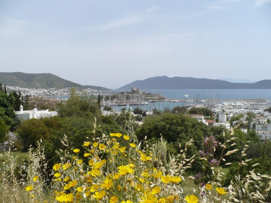
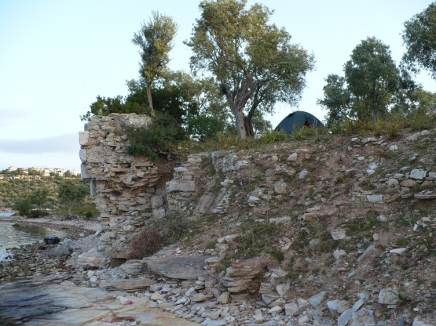
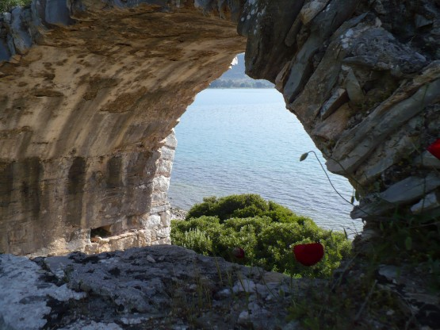

18 апреля
Пасмурное утро, быстро собрался, доехал 20 км до Бодрума. Нет, туристические города мне точно не нравятся. Толпы праздно шатающейся публики, узкие улочки, лавки с китайским хламом. Может быть, пасмурная погода повлияла на настроение, но крепость я решил осмотреть только снаружи.
Крепость как крепость:
Сделал полезное дело - поменял баксы на лиры в местном отделении PPT. Я так понял это местная почта, плюс обменник, плюс там же можно купить карточки для звонков через автоматы. Курс обмена был весьма приятный. Телефонная карточка тоже порадовала, за 10 лир (200 руб. ) я звонил практически каждый день по 2-3 минуты, и мне хватило до конца похода. Кстати позже я еще раз менял баксы на лиры в PPT но меньшем по размеру и курс там был куда менее приятный, странно но факт.
Выехал из города ближе к обеду, выглянуло солнце, и настроение сразу улучшилось.
Проехал обратно мимо места своей стоянки и двинулся дальше вдоль моря.
Бодрум и солнце.

Дорожка с малым трафиком шла на некотором удалении от моря, солнце медленно склонялось к закату, пора думать о стоянке и тут на глаза попался указатель к морю с надписью "IOSOS" на коричневатом фоне. Таким цветом турки обозначают достопримечательности. Через пару километров дорога уперлась в полуостров, можно сказать практически остров диаметром примерно в километр и резким возвышением к центру. Весь этот остров в древности явно был городом, окруженным крепостной стеной с улицами и лепящимися по склону домиками. Сейчас кроме развалин и оливковых деревьев на нем ничего не было. Я первый раз в жизни ставил палатку на остатках крепостной стены.
Ночь с призраками прошлого:

Отдельные строения на острове весьма неплохо сохранились, но больше всего мне понравилось отсутствие туристов и возможность побыть одному среди этой древности.
Вот также смотрели через эту арку на море 1000 лет назад.

IOSOS с лихвой компенсировал утреннее недовольство Бодрумом, и я уснул вполне довольным проведенным днем. На комне прибавилось 88 километров.